CODING AGENTS AS PIXEL WORLD MODELS
traex/DeepSeek-V4.1-Flash · 0152
点击播放 · 原生 RGB 像素
逐轮保存的候选
回放视频、检查图与代码变化。
每份候选均可单独播放。实际图片检查记录在下方工具轨迹中。
候选 01播放与检查图
点击播放 · 原生 RGB 像素
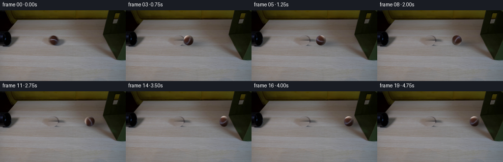
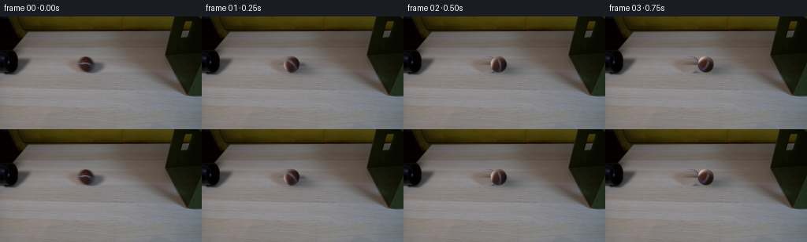
展开代码变化
--- 上一保存版本
+++ 本次保存版本
@@ -0,0 +1,234 @@
+from pathlib import Path
+
+import numpy as np
+from PIL import Image
+from scipy.ndimage import gaussian_filter, gaussian_filter1d, map_coordinates
+
+import artifact_io
+
+
+ROOT = Path(__file__).resolve().parent
+WIDTH, HEIGHT, FRAME_COUNT, FPS = 256, 144, 20, 4
+
+
+def smoothstep(edge0, edge1, value):
+ t = np.clip((value - edge0) / (edge1 - edge0), 0.0, 1.0)
+ return t * t * (3.0 - 2.0 * t)
+
+
+def make_clean_plate(source):
+ """Remove the original ball and its cast shadow, preserving table grain."""
+ yy, xx = np.mgrid[0:HEIGHT, 0:WIDTH]
+
+ ball_distance = np.sqrt(((xx - 107.2) / 10.9) ** 2 + ((yy - 61.3) / 11.1) ** 2)
+ ball_alpha = 1.0 - smoothstep(0.88, 1.03, ball_distance)
+
+ shadow_distance = np.sqrt(((xx - 124.0) / 18.8) ** 2 + ((yy - 67.2) / 6.1) ** 2)
+ shadow_alpha = (1.0 - smoothstep(0.38, 1.02, shadow_distance)) * 0.96
+ mask_alpha = np.clip(np.maximum(ball_alpha, shadow_alpha), 0.0, 1.0)
+ mask = mask_alpha > 0.002
+
+ fill = source.copy()
+ blurred_rows = gaussian_filter1d(source, sigma=5.0, axis=1, mode="reflect")
+
+ for y in np.flatnonzero(mask.any(axis=1)):
+ row_mask = mask[y]
+ xs = np.flatnonzero(row_mask)
+ left = max(0, int(xs[0]) - 2)
+ right = min(WIDTH - 1, int(xs[-1]) + 2)
+ span = np.arange(left, right + 1)
+ if right <= left:
+ continue
+
+ weight = (span - left) / float(right - left)
+ smooth = (
+ source[y, left][None, :] * (1.0 - weight[:, None])
+ + source[y, right][None, :] * weight[:, None]
+ )
+
+ # Copy nearby high-frequency wood grain onto the smooth interpolation.
+ source_x = np.clip(span + 52, 0, WIDTH - 1)
+ grain = source[y, source_x] - blurred_rows[y, source_x]
+ fill[y, span] = smooth + 0.82 * grain
+
+ clean = source * (1.0 - mask_alpha[..., None]) + fill * mask_alpha[..., None]
+ return np.clip(clean, 0.0, 255.0)
+
+
+def sphere_shade(nx, ny, nz):
+ light = np.array([-0.55, -0.72, 0.58], dtype=np.float32)
+ light /= np.linalg.norm(light)
+ diffuse = np.maximum(nx * light[0] + ny * light[1] + nz * light[2], 0.0)
+ directional = 0.58 + 0.50 * diffuse
+ rim = 0.72 + 0.28 * nz
+ return directional * rim
+
+
+def build_ball_albedo(source):
+ """Unwrap the visible ball surface into a rotating texture map."""
+ center_x, center_y = 107.2, 61.2
+ radius_x, radius_y = 10.45, 10.65
+ canvas_w, canvas_h = 33, 33
+ cx, cy = canvas_w // 2, canvas_h // 2
+
+ yy, xx = np.mgrid[0:canvas_h, 0:canvas_w]
+ u = (xx - cx) / 10.45
+ v = (yy - cy) / 10.65
+ rho2 = u * u + v * v
+ inside = rho2 < 1.0
+ nz = np.sqrt(np.maximum(1.0 - rho2, 0.0))
+ shade = sphere_shade(u, v, nz)
+
+ sample_x = center_x + u * radius_x
+ sample_y = center_y + v * radius_y
+ sampled = np.stack(
+ [
+ map_coordinates(source[:, :, channel], [sample_y, sample_x], order=1, mode="nearest")
+ for channel in range(3)
+ ],
+ axis=-1,
+ )
+
+ albedo = sampled / np.maximum(shade[..., None], 0.18)
+ albedo = np.clip(albedo, 0.0, 255.0)
+
+ # The source edge contains a little background and contact shadow. Reuse
+ # the nearby surface color there so rotation never drags the table along.
+ edge_sample_x = center_x + u * radius_x * 0.90
+ edge_sample_y = center_y + v * radius_y * 0.90
+ edge_color = np.stack(
+ [
+ map_coordinates(source[:, :, channel], [edge_sample_y, edge_sample_x], order=1, mode="nearest")
+ for channel in range(3)
+ ],
+ axis=-1,
+ )
+ edge_shade = sphere_shade(u * 0.90, v * 0.90, np.sqrt(np.maximum(1.0 - rho2 * 0.81, 0.0)))
+ edge_albedo = np.clip(edge_color / np.maximum(edge_shade[..., None], 0.18), 0.0, 255.0)
+ outer = smoothstep(0.91, 1.0, np.sqrt(np.maximum(rho2, 0.0)))
+ albedo = albedo * (1.0 - outer[..., None]) + edge_albedo * outer[..., None]
+ albedo[~inside] = edge_albedo[~inside]
+ return albedo, (cx, cy)
+
+
+def sample_albedo(albedo, cx, cy, u, v):
+ sample_x = cx + u * 10.45
+ sample_y = cy + v * 10.65
+ return np.stack(
+ [
+ map_coordinates(albedo[:, :, channel], [sample_y, sample_x], order=1, mode="nearest")
+ for channel in range(3)
+ ],
+ axis=-1,
+ )
+
+
+def render_ball(base, albedo, center_x, center_y, angle, squash_x=1.0, squash_y=1.0):
+ """Render a supersampled rolling sphere with fixed scene lighting."""
+ scale = 4
+ albedo_texture, albedo_center = albedo
+ radius_x, radius_y = 10.45, 10.65
+ pad = 2.0
+ left = int(np.floor(center_x - radius_x * squash_x - pad))
+ top = int(np.floor(center_y - radius_y * squash_y - pad))
+ right = int(np.ceil(center_x + radius_x * squash_x + pad))
+ bottom = int(np.ceil(center_y + radius_y * squash_y + pad))
+ left, top = max(left, 0), max(top, 0)
+ right, bottom = min(right, WIDTH), min(bottom, HEIGHT)
+ if right <= left or bottom <= top:
+ return base
+
+ out_w, out_h = right - left, bottom - top
+ xs = left + (np.arange(out_w * scale) + 0.5) / scale
+ ys = top + (np.arange(out_h * scale) + 0.5) / scale
+ xx, yy = np.meshgrid(xs, ys)
+
+ u = (xx - center_x) / (radius_x * squash_x)
+ v = (yy - center_y) / (radius_y * squash_y)
+ rho2 = u * u + v * v
+ inside = rho2 <= 1.0
+ nz = np.sqrt(np.maximum(1.0 - rho2, 0.0))
+
+ cos_a, sin_a = np.cos(angle), np.sin(angle)
+ texture_u = cos_a * u + sin_a * v
+ texture_v = -sin_a * u + cos_a * v
+ texture = sample_albedo(
+ albedo_texture, albedo_center[0], albedo_center[1], texture_u, texture_v
+ )
+
+ shade = sphere_shade(u, v, nz)
+ rgb = np.clip(texture * shade[..., None], 0.0, 255.0)
+
+ alpha = 1.0 - smoothstep(0.94, 1.0, np.sqrt(np.maximum(rho2, 0.0)))
+ alpha *= inside
+
+ rgb_pixels = rgb.reshape(out_h, scale, out_w, scale, 3).mean(axis=(1, 3))
+ alpha_pixels = alpha.reshape(out_h, scale, out_w, scale).mean(axis=(1, 3))
+
+ result = base.copy()
+ region = result[top:bottom, left:right]
+ region[:] = region * (1.0 - alpha_pixels[..., None]) + rgb_pixels * alpha_pixels[..., None]
+ result[top:bottom, left:right] = region
+ return result
+
+
+def apply_shadow(base, center_x, center_y, strength=1.0):
+ yy, xx = np.mgrid[0:HEIGHT, 0:WIDTH]
+ main = np.exp(
+ -0.5
+ * (
+ ((xx - (center_x + 15.0)) / 16.0) ** 2
+ + ((yy - (center_y + 6.4)) / 5.0) ** 2
+ )
+ )
+ contact = np.exp(
+ -0.5
+ * (
+ ((xx - (center_x + 5.0)) / 8.5) ** 2
+ + ((yy - (center_y + 7.0)) / 3.1) ** 2
+ )
+ )
+ alpha = np.clip(0.43 * main + 0.22 * contact, 0.0, 0.55) * strength
+ alpha = gaussian_filter(alpha, sigma=0.72)
+ tint = np.array([1.0, 0.96, 0.93], dtype=np.float32)
+ result = base.copy()
+ result *= 1.0 - alpha[..., None] * 0.62 * tint[None, None, :]
+ return np.clip(result, 0.0, 255.0)
+
+
+def ball_state(frame_index):
+ t = frame_index / float(FPS)
+ contact_time = 3.42
+ start_x = 107.0
+ speed = 27.5
+
+ if t < contact_time:
+ x = start_x + speed * t
+ else:
+ tau = t - contact_time
+ x = 198.0 + 3.0 * np.exp(-4.0 * tau)
+
+ squash = 1.0 - 0.065 * np.exp(-0.5 * ((t - 3.50) / 0.11) ** 2)
+ angle = (x - start_x) / 10.45
+ return float(x), 61.2, float(angle), float(squash), float(2.0 - squash)
+
+
+def main():
+ source = np.asarray(Image.open(ROOT / "first_frame.png").convert("RGB"), dtype=np.float32)
+ clean = make_clean_plate(source)
+ albedo, albedo_center = build_ball_albedo(source)
+
+ frames = np.empty((FRAME_COUNT, HEIGHT, WIDTH, 3), dtype=np.uint8)
+ frames[0] = source.astype(np.uint8)
+
+ for index in range(1, FRAME_COUNT):
+ x, y, angle, squash_x, squash_y = ball_state(index)
+ frame = apply_shadow(clean, x, y)
+ frame = render_ball(frame, (albedo, albedo_center), x, y, angle, squash_x, squash_y)
+ frames[index] = np.clip(frame, 0.0, 255.0).astype(np.uint8)
+
+ artifact_io.save(frames, ROOT)
+
+
+if __name__ == "__main__":
+ main()
候选 02播放与检查图
点击播放 · 原生 RGB 像素

展开代码变化
--- 上一保存版本
+++ 本次保存版本
@@ -158,6 +158,12 @@
shade = sphere_shade(u, v, nz)
rgb = np.clip(texture * shade[..., None], 0.0, 255.0)
+ # Restore the soft, slightly cool fill visible on the source ball's lower
+ # right side. It also keeps the small object from reading as a flat sprite.
+ fill = np.clip((-0.18 * u + 0.20 * v + 0.08), 0.0, 0.2)
+ rgb[..., 0] *= 1.0 - 0.72 * fill
+ rgb[..., 1] *= 1.0 - 0.30 * fill
+ rgb[..., 2] *= 1.0 + 0.10 * fill
alpha = 1.0 - smoothstep(0.94, 1.0, np.sqrt(np.maximum(rho2, 0.0)))
alpha *= inside
候选 03播放与检查图
点击播放 · 原生 RGB 像素

展开代码变化
代码未变化；重新保存了产物。
候选 04播放与检查图
点击播放 · 原生 RGB 像素
展开代码变化
--- 上一保存版本
+++ 本次保存版本
@@ -204,17 +204,18 @@
def ball_state(frame_index):
t = frame_index / float(FPS)
- contact_time = 3.42
+ contact_time = 3.30
start_x = 107.0
- speed = 27.5
+ speed = 28.0
+ wall_x = 209.8
if t < contact_time:
x = start_x + speed * t
else:
tau = t - contact_time
- x = 198.0 + 3.0 * np.exp(-4.0 * tau)
-
- squash = 1.0 - 0.065 * np.exp(-0.5 * ((t - 3.50) / 0.11) ** 2)
+ x = wall_x - 2.4 * np.sin(9.0 * tau) * np.exp(-4.6 * tau)
+
+ squash = 1.0 - 0.058 * np.exp(-0.5 * ((t - 3.38) / 0.10) ** 2)
angle = (x - start_x) / 10.45
return float(x), 61.2, float(angle), float(squash), float(2.0 - squash)

可观测工具轨迹
实际执行的命令与返回图片。
命令 1exit 0
/bin/bash -c "pwd && rg --files -g '"'!*.mp4'"' -g '"'!*.webm'"' -g '"'!*.gif'"' | sed -n '1,160p'"
命令 2exit 0
/bin/bash -c "sed -n '1,240p' prompt.txt"
命令 3exit 0
/bin/bash -c "sed -n '1,280p' GENERATION_RULES.md"
命令 4exit 0
/bin/bash -c 'ls -la && file first_frame.png && identify first_frame.png 2>/dev/null || true'
命令 5exit 0
/bin/bash -c "sed -n '1,260p' artifact_io.py"
命令 6exit 0
/bin/bash -c "sed -n '1,260p' player_template.html"
命令 7exit 0
/bin/bash -c "python - <<'PY'
from PIL import Image
im=Image.open('first_frame.png').convert('RGB')
print(im.size, im.mode)
# coarse grid average and some key color probes
for y in [0,5,20,30,35,50,80,105,110,140,143]:
print(y,[im.getpixel((x,y)) for x in [0,20,50,100,128,180,220,240,255]])
PY"命令 8exit 0
/bin/bash -c "python - <<'PY'
from PIL import Image
im=Image.open('first_frame.png')
# enlarge crops nearest/bicubic for inspection
for name,box in [('left',(0,0,80,110)),('ball',(75,35,145,85)),('right',(200,0,256,110)),('scene',(0,0,256,144))]:
crop=im.crop(box)
crop.resize((crop.width*4,crop.height*4),Image.Resampling.NEAREST).save(f'.tmp/{name}.png')
print(name,box)
PY"命令 9exit 0
/bin/bash -c "python - <<'PY'
try:
import cv2; print('cv2',cv2.__version__)
except Exception as e: print('no cv2',e)
try:
import scipy; print('scipy',scipy.__version__)
except Exception as e: print('no scipy',e)
import PIL,numpy
print('pillow',PIL.__version__,'numpy',numpy.__version__)
PY"命令 10exit 0
/bin/bash -c "python - <<'PY'
from PIL import Image
import numpy as np
im=np.array(Image.open('first_frame.png'))
# print bbox for dark warm ball pixels in central area
r=im[:,:,0].astype(int); g=im[:,:,1].astype(int); b=im[:,:,2].astype(int)
for condname,cond in [
('brown',(r-g>12)&(r-b>18)&(g<85)&(r<130)),
('brown2',(r>45)&(r-g>8)&(r-b>12)&(g<100)),
('dark',(r+g+b<210)),
('shadow',(r+g+b<340)&(r+g+b>250)&(r>g+4)&(g>b+4)),
]:
yy,xx=np.where(cond)
sel=(xx>70)&(xx<150)&(yy>35)&(yy<95)
print(condname,'count',sel.sum(),'bbox', (xx[sel].min(),yy[sel].min(),xx[sel].max(),yy[sel].max()) if sel.any() else None)
# Print ascii segmentation in crop
for y in range(46,80):
s=''
for x in range(88,130):
R,G,B=im[y,x]
if R-G>14 and R-B>18 and G<80: c='#'
elif R+G+B<330 and y>=64: c='.'
else: c=' '
s+=c
print(f'{y:3d} {s}')
PY"命令 11exit 0
/bin/bash -c "python - <<'PY'
from PIL import Image
import numpy as np
im=np.array(Image.open('first_frame.png')).astype(np.int16)
for y in range(35,76):
s=''
for x in range(90,145):
R,G,B=im[y,x]
if R-G>10 and R-B>16 and G<95: c='#'
elif R-G>4 and R-B>8 and G<125 and R+G+B<360: c='o'
elif R+G+B<345: c='.'
else: c=' '
s+=c
print(f'{y:3d} {s}')
PY"命令 12exit 0
/bin/bash -c "python - <<'PY'
import cv2, numpy as np
from PIL import Image
im=cv2.imread('first_frame.png')
for name,pts,rad in [
('telea',[(96,49),(122,49),(123,61),(140,61),(141,75),(117,75),(116,69),(96,69)],5),
('ns',[(96,49),(122,49),(123,61),(140,61),(141,75),(117,75),(116,69),(96,69)],7),
]:
mask=np.zeros(im.shape[:2],np.uint8)
cv2.fillPoly(mask,[np.array(pts,np.int32)],255)
# feather? no
if name=='telea': out=cv2.inpaint(im,mask,rad,cv2.INPAINT_TELEA)
else: out=cv2.inpaint(im,mask,rad,cv2.INPAINT_NS)
cv2.imwrite(f'.tmp/clean_{name}.png',out)
crop=out[35:85,80:150]
cv2.imwrite(f'.tmp/clean_{name}_crop.png',cv2.resize(crop,None,fx=6,fy=6,interpolation=cv2.INTER_NEAREST))
print('done')
PY"命令 13exit 0
/bin/bash -c "python - <<'PY'
from PIL import Image
import numpy as np
im=np.array(Image.open('first_frame.png'))
# extract ball crop and run against candidate ellipse/radial masks
for y in range(50,73):
print(f'{y:3d}', ' '.join('%02x%02x%02x'%tuple(im[y,x]) for x in range(97,123)))
PY"命令 14exit 0
/bin/bash -c "python - <<'PY'
from PIL import Image
import numpy as np
im=np.array(Image.open('first_frame.png'))
# Save luminance maps around right box at 4x for exact silhouette understanding
crop=im[0:115,205:256]
Image.fromarray(crop).resize((204,460),Image.Resampling.NEAREST).save('.tmp/right_near.png')
# mask nonwood/wood differences perhaps display grayscale
PY"命令 15exit 0
/bin/bash -c "python - <<'PY'
from PIL import Image
import numpy as np
im=np.array(Image.open('first_frame.png')).astype(float)
# inspect horizontal background profile at rows around ball to create clean table estimation
for y in [40,45,50,55,60,65,70,75]:
vals=[]
for x in range(85,151,5): vals.append(tuple(im[y,x].astype(int)))
print(y, vals)
PY"命令 16exit 0
/bin/bash -c "python - <<'PY'
from PIL import Image
im=Image.open('first_frame.png').crop((94,47,124,75))
im.resize((600,560),Image.Resampling.LANCZOS).save('.tmp/ball_lanczos.png')
PY"命令 17exit 0
/bin/bash -c "python - <<'PY'
from PIL import Image
import numpy as np
im=np.array(Image.open('first_frame.png')).astype(float)
# unique profiles of right box: sample rows and identify transitions
for y in [0,5,10,15,20,25,30,35,40,45,50,60,80,100,105,110]:
row=im[y]
# print compact samples x 210..255 step2
print(y, ' '.join(f'{int(row[x,0])},{int(row[x,1])},{int(row[x,2])}' for x in range(210,256,5)))
PY"命令 18exit 1
/bin/bash -c 'python generate.py'
命令 19exit 0
/bin/bash -c 'python generate.py'
命令 20exit 0
/bin/bash -c "python - <<'PY'
from PIL import Image, ImageDraw
import numpy as np
imgs=[Image.open(f'frames/{i:02d}.png') for i in range(20)]
# enlarged strips centered on ball, estimated positions
crops=[]
for i,im in enumerate(imgs):
x=int(round(107+27.5*(i/4)))
if i>=14: x=198
box=(max(0,x-20),40,min(256,x+42),85)
c=im.crop(box).resize((248,180),Image.Resampling.NEAREST)
crops.append((i,c))
sheet=Image.new('RGB',(248*5,(180+18)*4),(20,20,20)); d=ImageDraw.Draw(sheet)
for k,(i,c) in enumerate(crops):
x=(k%5)*248; y=(k//5)*198
sheet.paste(c,(x,y+18)); d.text((x+4,y+2),f'{i:02d}',fill='white')
sheet.save('.tmp/ball_sequence.png')
# contact closeups 12..19
sheet2=Image.new('RGB',(120*4,90*2),(20,20,20)); d=ImageDraw.Draw(sheet2)
for k,i in enumerate(range(12,20)):
c=imgs[i].crop((180,40,240,85)).resize((240,180),Image.Resampling.NEAREST)
x=(k%4)*240;y=(k//4)*180;sheet2.paste(c,(x,y));d.text((x+4,y+3),f'{i:02d}',fill='white')
sheet2.save('.tmp/contact_sequence.png')
PY"命令 21exit 0
/bin/bash -c "python - <<'PY'
from PIL import Image
for i in [1,5,10,13,14,16,19]:
im=Image.open(f'frames/{i:02d}.png')
im.resize((1024,576),Image.Resampling.NEAREST).save(f'.tmp/full_{i:02d}.png')
PY"命令 22exit 0
/bin/bash -c "python - <<'PY'
from PIL import Image
import numpy as np
for i in [0,1,2,3,4,5,6,7,8,9,10,11,12,13,14,15,16,17,18,19]:
a=np.array(Image.open(f'frames/{i:02d}.png'))
# region where ball should be, detect reddish pixels
r=a[:,:,0].astype(int);g=a[:,:,1].astype(int);b=a[:,:,2].astype(int)
m=(r-g>13)&(r-b>18)&(g<90)
yy,xx=np.where(m & (np.indices(m.shape)[0]<100))
if len(xx):
print(i,len(xx),(xx.min(),yy.min(),xx.max(),yy.max()), (round(xx.mean(),1),round(yy.mean(),1)))
else: print(i,0)
PY"命令 23exit 0
/bin/bash -c "python - <<'PY'
import numpy as np
from PIL import Image
import generate
src=np.asarray(Image.open('first_frame.png').convert('RGB'),dtype=np.float32)
clean=generate.make_clean_plate(src)
d=np.abs(src-clean).sum(2)
# Save residual heatmap central region
crop=np.clip(d[35:85,85:151]*2,0,255).astype('uint8')
Image.fromarray(crop).resize((396,300),Image.Resampling.NEAREST).save('.tmp/residual.png')
for thresh in [20,40,60,80,120]:
m=d>thresh; yy,xx=np.where(m & (np.indices(m.shape)[0]<90)&(np.indices(m.shape)[0]>30)&(np.indices(m.shape)[1]>70)&(np.indices(m.shape)[1]<160))
print(thresh,len(xx),(xx.min(),yy.min(),xx.max(),yy.max()))
PY"命令 24exit 0
/bin/bash -c "python - <<'PY'
from PIL import Image
import numpy as np
im=np.array(Image.open('first_frame.png'))
for i in [0,1,10,19]:
a=np.array(Image.open(f'frames/{i:02d}.png'))
print(i,'same frame0?',np.array_equal(a,im))
# diff outside central bbox
d=np.abs(a.astype(int)-im.astype(int)).max(2)
print('diff >2',int((d>2).sum()),'bbox', end=' ')
yy,xx=np.where(d>2)
print((xx.min(),yy.min(),xx.max(),yy.max()) if len(xx) else None)
PY"命令 25exit 0
/bin/bash -c "python - <<'PY'
from PIL import Image
import numpy as np
for i in [1,5,10,14,19]:
a=np.array(Image.open(f'frames/{i:02d}.png'))
# crop central around expected ball and save lanczos 8x
x=int(round(107+27.5*(i/4))) if i<14 else 198
if i==19:x=201
crop=a[46:78,max(0,x-17):x+38]
Image.fromarray(crop).resize((crop.shape[1]*8,crop.shape[0]*8),Image.Resampling.LANCZOS).save(f'.tmp/ball_new_{i:02d}.png')
PY"命令 26exit 0
/bin/bash -c "python - <<'PY'
from PIL import Image
import numpy as np
src=np.array(Image.open('first_frame.png'))
print('source ball neighborhood')
for y in range(52,71):
print(f'{y:2d}',' '.join('%02x%02x%02x'%tuple(src[y,x]) for x in range(95,122)))
PY"命令 27exit 0
/bin/bash -c "python - <<'PY'
from PIL import Image
import numpy as np
src=np.array(Image.open('first_frame.png'))
a=np.array(Image.open('frames/01.png'))
# compare ball center profile generated to source; generated center ~113.9
print('gen 01 row60 x100..126')
for x in range(100,127): print(x,src[60,x],a[60,x])
PY"命令 28exit 0
/bin/bash -c "python - <<'PY'
from PIL import Image
import numpy as np
# inspect clean plate diff and original source right next to source ball at y=60
src=np.array(Image.open('first_frame.png'))
a=np.array(Image.open('frames/01.png'))
print('gen row 61')
for x in range(102,125):print(x,tuple(src[61,x]),tuple(a[61,x]))
PY"命令 29exit 0
/bin/bash -c "python - <<'PY'
import numpy as np
from PIL import Image
import generate
src=np.asarray(Image.open('first_frame.png').convert('RGB'),dtype=np.float32)
a, c=generate.build_ball_albedo(src)
print('center',c,'albedo shape',a.shape,'minmax',a.min(),a.max(),'mean',a.mean((0,1)))
# save albedo
Image.fromarray(np.clip(a,0,255).astype('uint8')).resize((330,330),Image.Resampling.NEAREST).save('.tmp/albedo.png')
# estimate actual ball radii by mask
r=src[:,:,0];g=src[:,:,1];b=src[:,:,2]
m=(r-g>8)&(r-b>12)&(g<100)
yy,xx=np.where(m & (np.indices(m.shape)[0]>45)&(np.indices(m.shape)[0]<80)&(np.indices(m.shape)[1]>90)&(np.indices(m.shape)[1]<130))
print('mask',len(xx),(xx.min(),yy.min(),xx.max(),yy.max()))
PY"命令 30exit 0
/bin/bash -c "python - <<'PY'
from PIL import Image
import numpy as np
im=np.array(Image.open('first_frame.png')).astype(float)
# estimate table background at each row by polynomial fit over ball area from x=75..160 excluding 95..140
for y in [51,52,55,58,60,63,66,69,72]:
xs=np.r_[np.arange(75,96),np.arange(140,161)]
vals=im[y,xs]
# fit each channel poly2
out=[]
for ch in range(3):
co=np.polyfit(xs,vals[:,ch],2)
out.append(co)
xq=np.arange(95,141)
bg=np.stack([np.polyval(co,xq) for co in out],1)
print(y,'bg at95',np.round(bg[0],0),'at117',np.round(bg[22],0),'at140',np.round(bg[-1],0))
PY"命令 31exit 0
/bin/bash -c "python - <<'PY'
from PIL import Image
import numpy as np
im=np.array(Image.open('first_frame.png'))
# save top left crop 8x
for name,box in [('lefttube',(0,0,90,105)),('lefttop',(0,0,65,40)),('boxdetail',(215,0,256,105))]:
c=Image.fromarray(im[box[1]:box[3],box[0]:box[2]])
c.resize((c.width*8,c.height*8),Image.Resampling.NEAREST).save(f'.tmp/{name}.png')
PY"命令 32exit 0
/bin/bash -c "python generate.py && python - <<'PY'
from PIL import Image
import numpy as np
for i in [1,10,19]:
a=np.array(Image.open(f'frames/{i:02d}.png'))
x=int(round(107+27.5*(i/4))) if i<14 else 198
if i==19:x=201
c=a[45:80,max(0,x-18):x+39]
Image.fromarray(c).resize((c.shape[1]*8,c.shape[0]*8),Image.Resampling.LANCZOS).save(f'.tmp/ball_v2_{i:02d}.png')
PY"命令 33exit 0
/bin/bash -c "python - <<'PY'
from PIL import Image
import numpy as np
src=np.array(Image.open('first_frame.png'))
# Compare original ball center and generated frame 1 rendering after aligning their centers
# find circle darkness in src via difference from smooth row/column neighborhood
for i in range(20):
a=np.array(Image.open(f'frames/{i:02d}.png'))
# sample roughness / variance in ball crop vs background
# expected center x
x=107+27.5*(i/4) if i<14 else 198+3*np.exp(-4*(i/4-3.42))
y=61.2
yy,xx=np.mgrid[0:144,0:256]
m=((xx-x)/10.5)**2+((yy-y)/10.7)**2<0.72
pix=a[m]
print(i,round(x,2),tuple(np.round(pix.mean(0)).astype(int)),tuple(np.round(pix.std(0)).astype(int)))
PY"命令 34exit 0
/bin/bash -c "python - <<'PY'
from PIL import Image
import numpy as np
src=np.array(Image.open('first_frame.png'))
for i in [0,1,10,19]:
a=np.array(Image.open(f'frames/{i:02d}.png'))
# save central crop nearest x8
c=a[45:80,85:240]
Image.fromarray(c).resize((c.shape[1]*5,c.shape[0]*5),Image.Resampling.NEAREST).save(f'.tmp/strip_{i:02d}.png')
PY"命令 35exit 0
/bin/bash -c "python - <<'PY'
from PIL import Image
import numpy as np
im=np.array(Image.open('first_frame.png'))
# Build mean and gradient table around x=90..140,y=40..85 to locate actual ball center using residual against row interpolation.
# Print local dark residual (sum of RGB difference from avg of x=90 and x=140 interpolation)
for y in range(48,73):
s=''
for x in range(94,130):
bg=im[y,90].astype(float)+(im[y,140].astype(float)-im[y,90].astype(float))*(x-90)/50
v=im[y,x].astype(float)
d=np.mean(bg-v)
s += '#' if d>60 else '+' if d>25 else '.' if d>8 else ' '
print(f'{y:3d}',s)
PY"命令 36exit 0
/bin/bash -c "python - <<'PY'
from PIL import Image
import numpy as np
src=np.array(Image.open('first_frame.png')).astype(float)
a=np.array(Image.open('frames/01.png')).astype(float)
# locate center using weighted dark residual from simple horizontal background interpolation
# estimate source ball mask via difference from horizontal median interpolation
for y in range(50,72):
bg=(src[y,90]+src[y,140])/2
d=np.mean(bg-src[y,95:130],axis=1)
if d.max()>30:
idx=np.argsort(d)[-3:]
print(y,[(int(95+k),round(d[k],1)) for k in idx])
PY"命令 37exit 0
/bin/bash -c "python - <<'PY'
from PIL import Image
import numpy as np
im=np.array(Image.open('first_frame.png'))
# Determine ball center from symmetry of edge rows roughly. row 61 edge x ~98..127 center112.5. row 61 darkest ~109.
# Display source and generated with a guide not needed.
# check pixel stats in 20x20 mask source and generated at first frame
PY"命令 38exit 0
/bin/bash -c "python - <<'PY'
from PIL import Image
import numpy as np
im=np.array(Image.open('first_frame.png')).astype(int)
for y in [50,55,60,61,62,65,70,75,80,85,90,95]:
print('\\ny',y)
for x in range(205,241):
r,g,b=im[y,x]
# classify box olive if greenish and darker than wood
if g>r+5 and g>b+5 and g<100: c='B'
elif r+g+b<190: c='D'
elif r>g+8 and r>b+12: c='w'
else: c='.'
print(c,end='')
print('\\n',[(x,tuple(im[y,x])) for x in range(210,231,2)])
PY"命令 39exit 0
/bin/bash -c "python - <<'PY'
from PIL import Image
import numpy as np
src=np.array(Image.open('first_frame.png'))
# The dark table strip around y=58-63 makes the original ball seem to float. Test a clean plate crop.
import generate
clean=generate.make_clean_plate(src.astype(float))
for i in [0,1]:
a=np.array(Image.open(f'frames/{i:02d}.png'))
c=a[42:82,85:145]
Image.fromarray(c).resize((c.shape[1]*8,c.shape[0]*8),Image.Resampling.NEAREST).save(f'.tmp/detail_{i:02d}.png')
PY"命令 40exit 0
/bin/bash -c "python - <<'PY'
from PIL import Image
import numpy as np
im=np.array(Image.open('first_frame.png'))
# Print the pixel grid around ball at each row with symbols based on brightness to infer actual boundary
for y in range(49,73):
s=''
for x in range(96,130):
v=im[y,x].mean()
s += '#' if v<55 else '@' if v<70 else 'o' if v<85 else '+' if v<105 else '.' if v<120 else ' '
print(f'{y:3d} {s}')
PY"命令 41exit 0
/bin/bash -c 'python generate.py'
命令 42exit 0
/bin/bash -c "python - <<'PY'
from PIL import Image
import numpy as np
for i in [1,2,3,4,5,6,7,8,9,10,11,12,13,14,15,16,17,18,19]:
a=np.array(Image.open(f'frames/{i:02d}.png'))
x=107+28*(i/4) if i/4<3.3 else 209.8-2.4*np.sin(9*(i/4-3.3))*np.exp(-4.6*(i/4-3.3))
y=61.2
c=a[46:79,int(x)-18:int(x)+39]
Image.fromarray(c).resize((c.shape[1]*7,c.shape[0]*7),Image.Resampling.NEAREST).save(f'.tmp/seq3_{i:02d}.png')
# montage frames 12..19
sheet=Image.new('RGB',(4*230,2*240),(30,30,30))
for k,i in enumerate(range(12,20)):
im=Image.open(f'.tmp/seq3_{i:02d}.png'); im.thumbnail((230,230))
sheet.paste(im,((k%4)*230,(k//4)*240))
sheet.save('.tmp/contact3.png')
PY"命令 43exit 0
/bin/bash -c "python - <<'PY'
import numpy as np, json, os
from PIL import Image
z=np.load('pixels.npz')['pixels']
print('pixels',z.shape,z.dtype,'minmax',z.min(),z.max())
# unpack packed rgb to compare first frame
v=z[:,:,0]
a=np.empty((144,256,3),np.uint8);a[...,0]=v>>16;a[...,1]=(v>>8)&255;a[...,2]=v&255
src=np.array(Image.open('first_frame.png'))
print('frame0 exact',np.array_equal(a,src))
for i in [0,1,19]:
f=Image.open(f'frames/{i:02d}.png');print(i,f.size,f.mode)
print('npz MB',os.path.getsize('pixels.npz')/1e6,'html MB',os.path.getsize('index.html')/1e6)
print('task spec',os.path.exists('task_spec.json'))
# frame difference count and unique number
frames=np.stack([np.array(Image.open(f'frames/{i:02d}.png')) for i in range(20)])
print('all unique frames',len({x.tobytes() for x in frames}))
PY"命令 44exit 0
/bin/bash -c "python - <<'PY'
try:
from playwright.sync_api import sync_playwright
print('playwright available')
except Exception as e:
print('playwright unavailable:',repr(e))
PY"命令 45exit 1
/bin/bash -c 'python -m http.server 8123 --bind 127.0.0.1'
命令 46exit 1
/bin/bash -c "python - <<'PY'
from playwright.sync_api import sync_playwright
from pathlib import Path
url=Path('index.html').resolve().as_uri()
with sync_playwright() as p:
b=p.chromium.launch(headless=True)
page=b.new_page(viewport={'width':900,'height':700})
errors=[]
page.on('pageerror',lambda e: errors.append(str(e)))
page.goto(url)
page.wait_for_function('window.__pixelReady === true')
page.screenshot(path='.tmp/player_initial.png',full_page=True)
print('title',page.title())
print('time',page.locator('#time').inner_text())
print('caption',page.locator('#caption').inner_text())
print('canvas',page.locator('canvas').evaluate('(c)=>({w:c.width,h:c.height,clientW:c.clientWidth,clientH:c.clientHeight})'))
page.locator('#play').click()
page.wait_for_timeout(1800)
print('mid',page.locator('#time').inner_text(),'button',page.locator('#play').inner_text())
page.screenshot(path='.tmp/player_mid.png',full_page=True)
page.wait_for_timeout(3800)
print('end',page.locator('#time').inner_text(),'button',page.locator('#play').inner_text())
print('errors',errors)
b.close()
PY"命令 47exit 1
/bin/bash -c 'mkdir -p .tmp/playwright-artifacts && TMPDIR="$PWD/.tmp" python - <<'"'PY'
from playwright.sync_api import sync_playwright
from pathlib import Path
url=Path('index.html').resolve().as_uri()
with sync_playwright() as p:
b=p.chromium.launch(headless=True)
page=b.new_page(viewport={'width':900,'height':700})
errors=[]
page.on('pageerror',lambda e: errors.append(str(e)))
page.goto(url)
page.wait_for_function('window.__pixelReady === true')
page.screenshot(path='.tmp/player_initial.png',full_page=True)
print('title',page.title())
print('time',page.locator('#time').inner_text())
print('caption',page.locator('#caption').inner_text())
print('canvas',page.locator('canvas').evaluate('(c)=>({w:c.width,h:c.height,clientW:c.clientWidth,clientH:c.clientHeight})'))
page.locator('#play').click()
page.wait_for_timeout(1800)
print('mid',page.locator('#time').inner_text(),'button',page.locator('#play').inner_text())
page.screenshot(path='.tmp/player_mid.png',full_page=True)
page.wait_for_timeout(3800)
print('end',page.locator('#time').inner_text(),'button',page.locator('#play').inner_text())
print('errors',errors)
b.close()
PY"命令 48exit 0
/bin/bash -c "python - <<'PY'
import json, re, base64
from pathlib import Path
html=Path('index.html').read_text()
m=re.search(r'const DATA=(\\{.*?\\}),W=',html)
print('data parsed',bool(m))
data=json.loads(m.group(1))
print('keys',data.keys(),'frames',data['frames'],'deltas',len(data['deltas']),'audio',data['audio'])
first=base64.b64decode(data['first'])
print('first bytes',len(first),len(first)==256*144*4)
for i,d in enumerate(data['deltas'][:2]):
raw=base64.b64decode(d); print(i,len(raw),len(raw)//4)
PY"命令 49exit 0
/bin/bash -c "python - <<'PY'
import ast
from pathlib import Path
src=Path('generate.py').read_text()
ast.parse(src)
print('syntax ok, lines',len(src.splitlines()))
PY"命令 50exit 0
/bin/bash -c "python - <<'PY'
import numpy as np
from PIL import Image
# print x centers by tracking darkness around y=61
for i in range(20):
a=np.array(Image.open(f'frames/{i:02d}.png')).astype(float)
row=a[61]
bg=(row[85]+row[240])/2
d=np.mean(bg-row,axis=1)
lo=85;hi=240
inds=np.arange(lo,hi)
weights=np.clip(d[lo:hi]-8,0,None)
if weights.sum():
x=(inds*weights).sum()/weights.sum()
else:x=-1
print(f'{i:02d}: {x:6.2f}')
PY"命令 51exit 0
/bin/bash -c "python - <<'PY'
from PIL import Image
import numpy as np
# Ball-only center estimate using pixels with warm dark chroma and narrow y band
for i in range(20):
a=np.array(Image.open(f'frames/{i:02d}.png')).astype(int)
r,g,b=a[:,:,0],a[:,:,1],a[:,:,2]
yy,xx=np.mgrid[0:144,0:256]
m=(r-g>7)&(r-b>12)&(g<105)&(yy>=48)&(yy<=74)&(xx>=85)&(xx<=230)
# remove table brown (box area x>216)
m &= ~(xx>216)
if m.sum():
print(i,m.sum(),round(xx[m].mean(),2),round(yy[m].mean(),2),(xx[m].min(),xx[m].max()))
else: print(i,0)
PY"命令 52exit 0
/bin/bash -c "python - <<'PY'
from PIL import Image
import numpy as np
# compare generated ball mask in fixed local window around known center
states=[107+28*(i/4) for i in range(14)]
states += [209.8-2.4*np.sin(9*(i/4-3.3))*np.exp(-4.6*(i/4-3.3)) for i in range(14,20)]
for i,x in enumerate(states):
a=np.array(Image.open(f'frames/{i:02d}.png')).astype(int)
r,g,b=a[:,:,0],a[:,:,1],a[:,:,2]
yy,xx=np.mgrid[0:144,0:256]
m=(r-g>8)&(r-b>12)&(g<105)&(abs(xx-x)<15)&(abs(yy-61)<15)
if m.sum(): print(i,round(x,2),m.sum(),round(xx[m].mean(),2),round(yy[m].mean(),2),(xx[m].min(),xx[m].max()))
PY"命令 53exit 0
/bin/bash -c "python - <<'PY'
from PIL import Image
import numpy as np
# actual visual crop montage for frames 0,1,13,14
for i in [0,1,13,14,15,16,19]:
a=np.array(Image.open(f'frames/{i:02d}.png'))
c=a[46:80,185:240] if i>=13 else a[46:80,85:140]
Image.fromarray(c).resize((c.shape[1]*8,c.shape[0]*8),Image.Resampling.NEAREST).save(f'.tmp/finaldetail_{i:02d}.png')
PY"命令 54exit 0
/bin/bash -c "python - <<'PY'
from PIL import Image
import numpy as np
im=np.array(Image.open('first_frame.png'))
# Show full-resolution crop from x=195..256, y=45..100 with labels maybe nearest 10x
c=im[45:100,195:256]
Image.fromarray(c).resize((c.shape[1]*10,c.shape[0]*10),Image.Resampling.NEAREST).save('.tmp/impact_bg.png')
PY"命令 55exit 0
/bin/bash -c "python - <<'PY'
from pathlib import Path
import ast
p=Path('generate.py')
ast.parse(p.read_text())
print('generate.py syntax: ok')
print('prompt:',Path('prompt.txt').read_text().strip())
PY"命令 56exit 0
/bin/bash -c "git status --short 2>/dev/null || true && find . -maxdepth 2 -type f -printf '%p %s bytes\\n' | sort | sed -n '1,120p'"
命令 57exit 0
/bin/bash -c "python - <<'PY'
import hashlib
from pathlib import Path
from PIL import Image
import numpy as np
files=[Path(f'frames/{i:02d}.png') for i in range(20)]
h=[hashlib.sha256(p.read_bytes()).hexdigest() for p in files]
print('frames',len(files),'unique',len(set(h)))
print('frame00 matches first_frame:',np.array_equal(np.array(Image.open('frames/00.png')),np.array(Image.open('first_frame.png'))))
z=np.load('pixels.npz')['pixels']
print('tensor',z.shape,z.dtype,'expected', (144,256,20),np.uint32)
# verify every pixel tensor entry reconstructs its saved PNG
ok=True
for i in range(20):
a=np.array(Image.open(f'frames/{i:02d}.png'))
v=z[:,:,i]
r=v>>16;g=(v>>8)&255;b=v&255
ok &= np.array_equal(a[...,0],r) and np.array_equal(a[...,1],g) and np.array_equal(a[...,2],b)
print('pixel tensor matches all PNGs:',ok)
PY"命令 58exit 0
/bin/bash -c 'git status --short -- . 2>/dev/null || true'
命令 59exit 0
/bin/bash -c "python - <<'PY'
import numpy as np
from PIL import Image
# final motion diagnostics: ball center via local dark chroma, excluding table/box
st=[]
for i in range(20):
a=np.array(Image.open(f'frames/{i:02d}.png')).astype(int)
x0=107+28*(i/4) if i/4<3.3 else 209.8-2.4*np.sin(9*(i/4-3.3))*np.exp(-4.6*(i/4-3.3))
x0=int(round(x0))
crop=a[48:75,max(0,x0-15):min(256,x0+16)]
r,g,b=crop[:,:,0],crop[:,:,1],crop[:,:,2]
m=(r-g>8)&(r-b>12)&(g<105)
yy,xx=np.where(m)
cx=(xx+max(0,x0-15)).mean() if len(xx) else None
st.append(cx)
print('estimated ball centers:',[round(x,1) for x in st])
print('motion spans:',round(st[-1]-st[0],1),'px')
PY"命令 60exit 0
/bin/bash -c "python - <<'PY'
from PIL import Image
import numpy as np
# Verify frame boundaries remain unchanged over whole sequence except moving ball/shadow region.
base=np.array(Image.open('first_frame.png')).astype(int)
for i in range(1,20):
a=np.array(Image.open(f'frames/{i:02d}.png')).astype(int)
d=np.max(np.abs(a-base),axis=2)
yy,xx=np.where(d>0)
print(i,(xx.min(),yy.min(),xx.max(),yy.max()),int((d>2).sum()))
PY"视觉工具实际返回图片 1
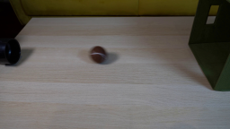
视觉工具实际返回图片 2
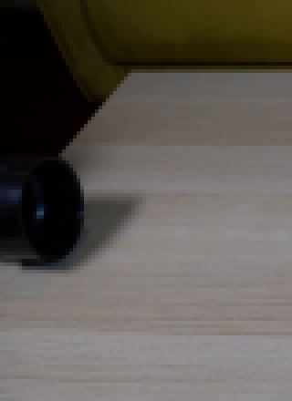
视觉工具实际返回图片 3
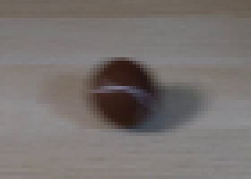
视觉工具实际返回图片 4
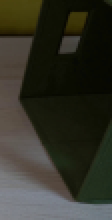
视觉工具实际返回图片 5
视觉工具实际返回图片 6
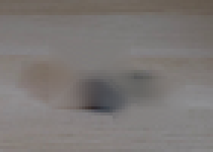
视觉工具实际返回图片 7
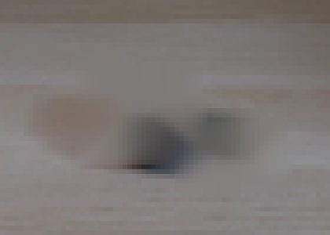
视觉工具实际返回图片 8
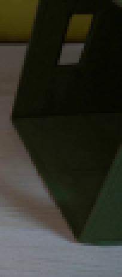
视觉工具实际返回图片 9
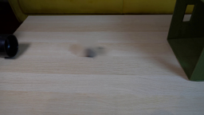
视觉工具实际返回图片 10
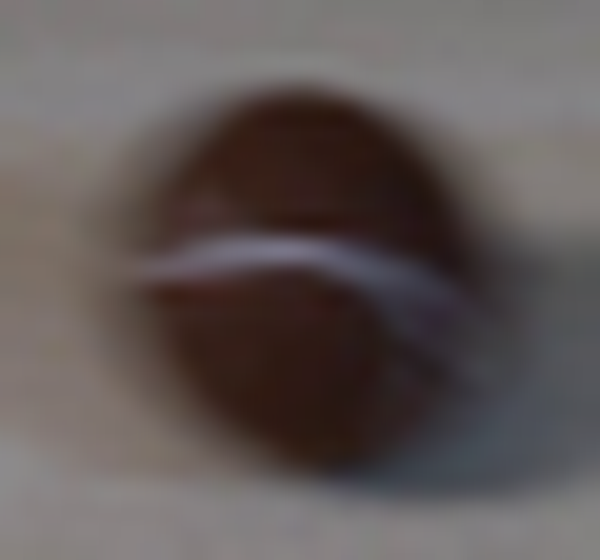
视觉工具实际返回图片 11

视觉工具实际返回图片 12
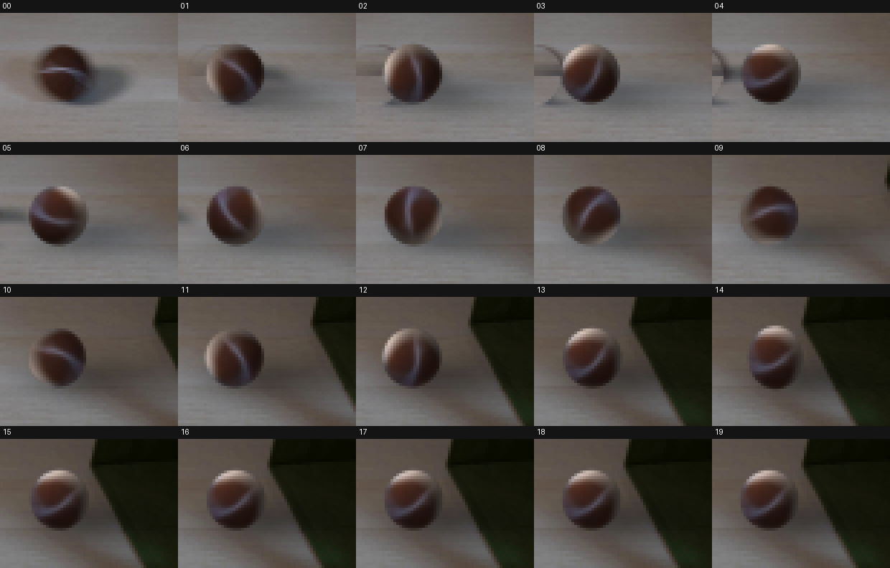
视觉工具实际返回图片 13
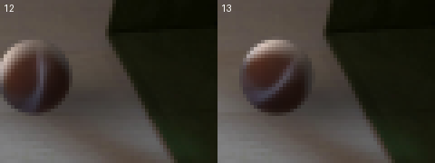
视觉工具实际返回图片 14
视觉工具实际返回图片 15
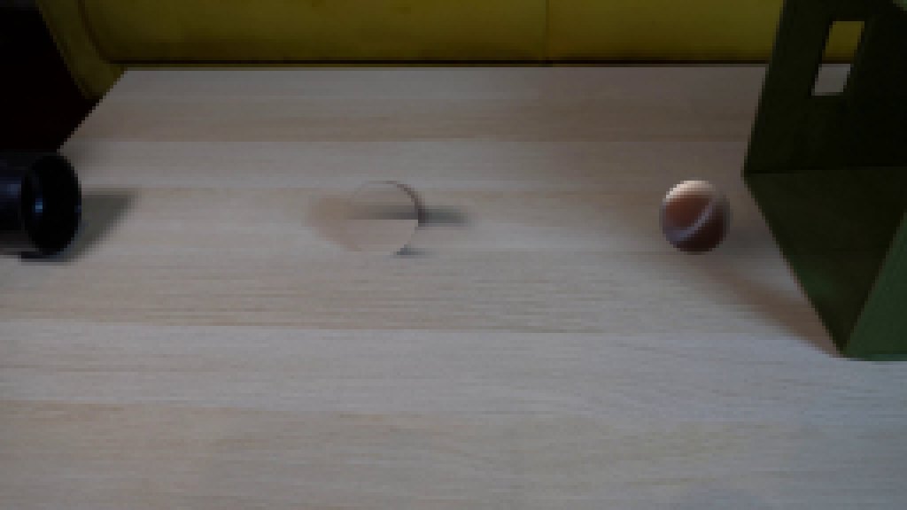
视觉工具实际返回图片 16
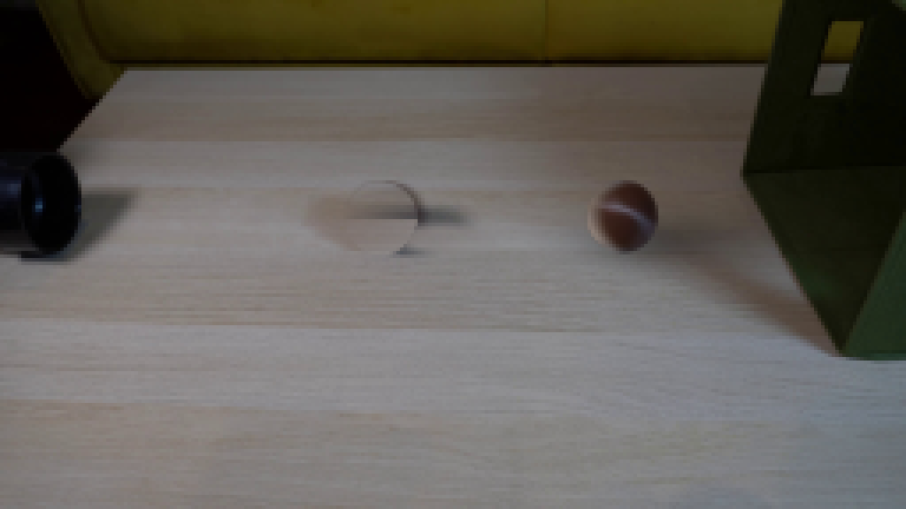
视觉工具实际返回图片 17
视觉工具实际返回图片 18
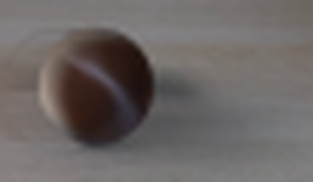
视觉工具实际返回图片 19
视觉工具实际返回图片 20
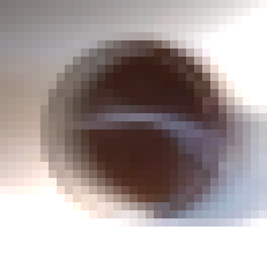
视觉工具实际返回图片 21
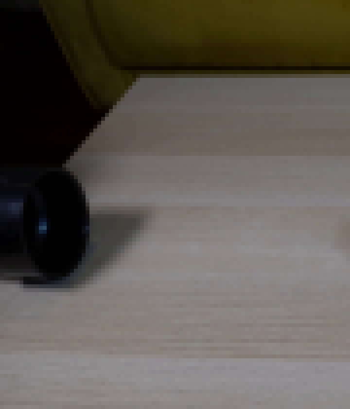
视觉工具实际返回图片 22
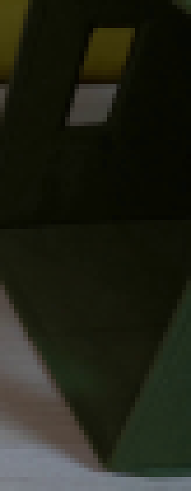
视觉工具实际返回图片 23
视觉工具实际返回图片 24
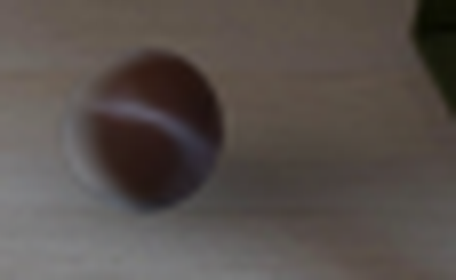
视觉工具实际返回图片 25
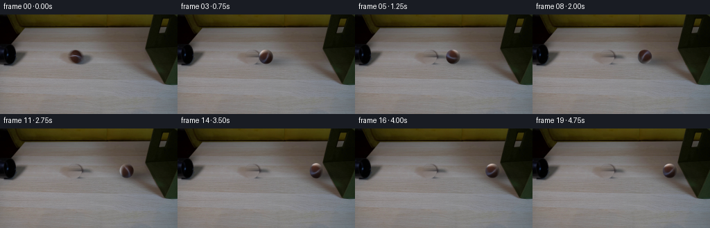
视觉工具实际返回图片 26
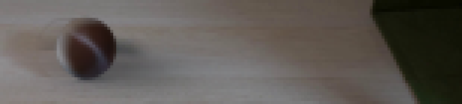
视觉工具实际返回图片 27
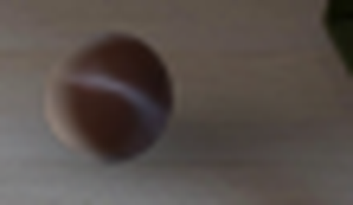
视觉工具实际返回图片 28
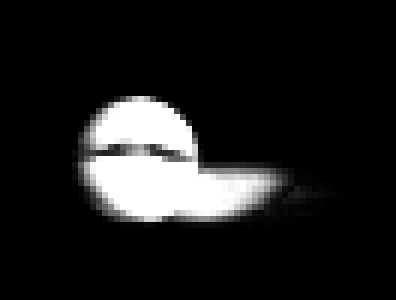
视觉工具实际返回图片 29
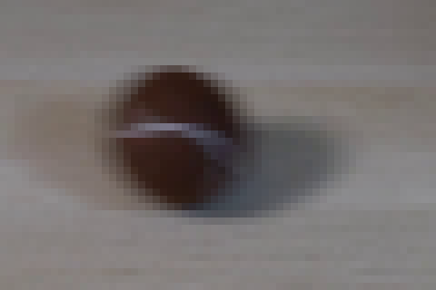
视觉工具实际返回图片 30
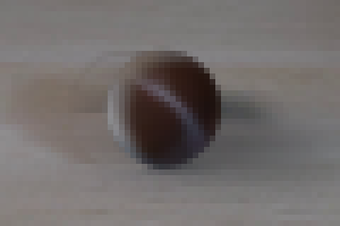
视觉工具实际返回图片 31
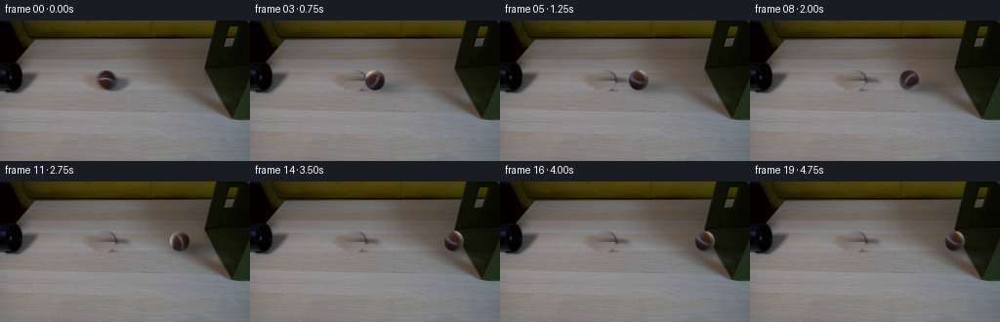
视觉工具实际返回图片 32
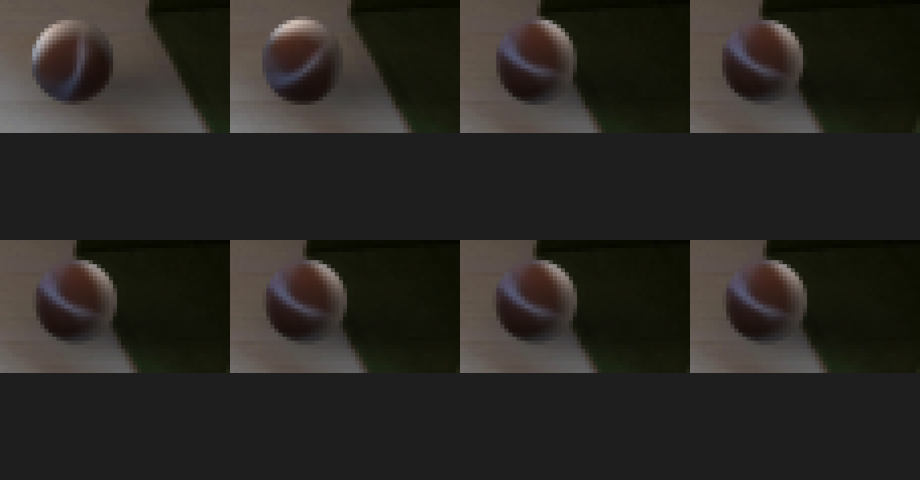
视觉工具实际返回图片 33
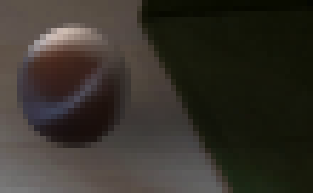
视觉工具实际返回图片 34
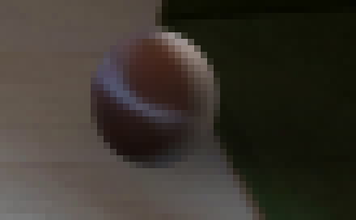
视觉工具实际返回图片 35
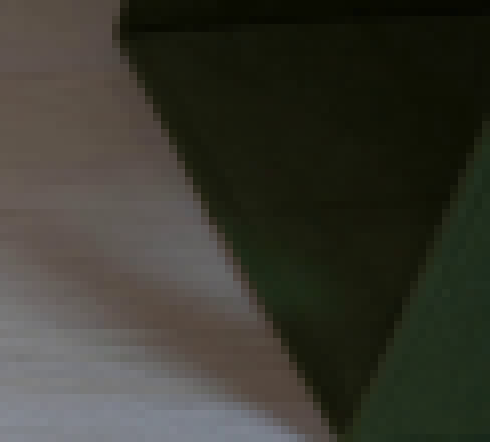
保存候选 5 份；完成命令 60 次；可验证图片返回 35 张。原始 API 响应与完整日志保留在本地。